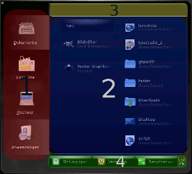
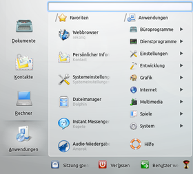
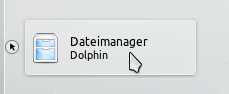
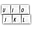
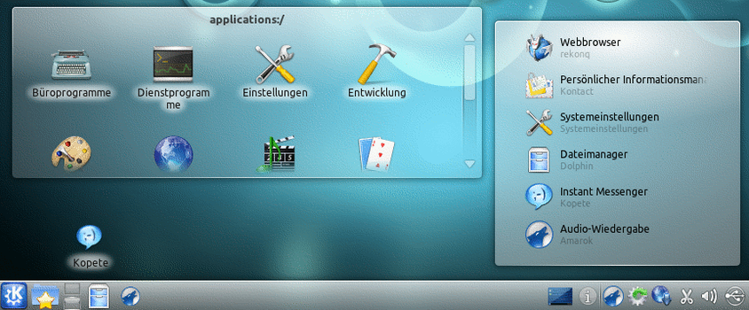
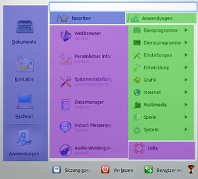
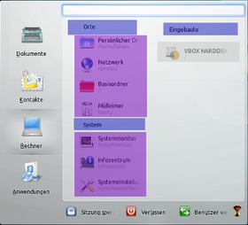
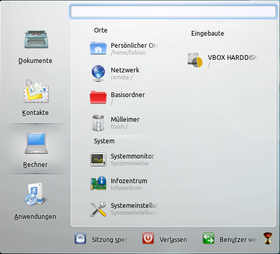

Lancelot
Dieser Artikel wurde für die folgenden Ubuntu-Versionen getestet:
Ubuntu 14.04 Trusty Tahr
Zum Verständnis dieses Artikels sind folgende Seiten hilfreich:
Lancelot  ist ein moderner Programmstarter, ähnlich dem in Kubuntu standardmäßig verwendeten Kickoff. Er wurde mit dem Ziel entworfen, einen Platz zu bieten, von welchen aus alle Aufgaben gestartet werden können. Er bietet einen schnellen Zugang zu Anwendungen, Kontakten und System-Informationen, sowie zu Dateien und Orten. Er ist als Miniprogramm konzipiert.
ist ein moderner Programmstarter, ähnlich dem in Kubuntu standardmäßig verwendeten Kickoff. Er wurde mit dem Ziel entworfen, einen Platz zu bieten, von welchen aus alle Aufgaben gestartet werden können. Er bietet einen schnellen Zugang zu Anwendungen, Kontakten und System-Informationen, sowie zu Dateien und Orten. Er ist als Miniprogramm konzipiert.
Hinweis:
Der Name ist in Anlehnung an Monty Pythons Film Die Ritter der Kokosnuß entstanden. Außerdem besteht in der englischen Sprache eine phonetische Ähnlichkeit zu „launch a lot“ (sinngemaß: Starte viel). Das Icon ist mit Bezug zum Originalfilmtitel ein "Gral".
Merkmale¶
Zu den Merkmalen von Lancelot gehören:
Eine Menüanordnung, welche die am häufigsten genutzten Anwendungen nah an der Maus positioniert
Integration von KRunner
ein optionaler Null-Klick-Modus, der die Menünavigation ohne Mausklicks ermöglicht
Die Möglichkeit, einzelne Teile von Lancelot frei auf dem Desktop zu positionieren.
Installation¶
Lancelot ist ein Miniprogramm. Es ist bereits in der Grundinstallation von Kubuntu enthalten. Falls es, wider Erwarten, fehlen sollte, kann es mit dem Paket
plasma-widget-lancelot
 mit apturl
mit apturl
Paketliste zum Kopieren:
sudo apt-get install plasma-widget-lancelot
sudo aptitude install plasma-widget-lancelot
nachinstalliert [1] werden.
Um es zu benutzen, wählt man "Einstellungen für Kontrollleiste -> Miniprogramm hinzufügen -> Lancelot-Programmstarter" und zieht es in die Kontrollleiste.
Aufbau¶
|  |
| Aufbau (Bereiche) |
Übersicht¶
Lancelot hat einen viergeteilten, hierarchischen Aufbau (siehe Bild re., mit Farbmarkierungen hervorgehoben).
(rot markiert) ist die Auswahl der Kategorien Dokumente, Kontakte, Rechner und Anwendungen.
(blau markiert) erscheint ein kontextabhängiger Menübereich, in welchem die Unterpunkte der Auswahl angezeigt werden. Er gliedert sich in zwei Spalten. Während der Bedienung erscheint hier auch eine Brotkrümelnavigation
(gelb markiert) ist ein KRunner-Eingabefeld, das die bekannten Funktionen bietet.
(grün markiert) sind drei System-Icons (Abmelden, Sperren des Bildschirms, Benutzer wechseln, o.ä.). Sie sind frei konfigurierbar (Funktion/Position).
Kategorien¶
Anwendungen¶
Wenn man Lancelot öffnet, so ist zum Start immer die Kategorie "Anwendungen" geöffnet. Auf der linken Seite werden Favoriten angezeigt, auf der rechten Seite werden die einzelnen Programmkategorien aufgelistet. Klickt man mit  auf eine der Kategorien, so werden sämtliche in ihr enthaltenen Programme aufgelistet.
auf eine der Kategorien, so werden sämtliche in ihr enthaltenen Programme aufgelistet.
|  |
| Kategorie = Anwendungen |
Rechner¶
In der Kategorie "Rechner" befinden sich die Sektionen "Orte", "System" (beide links). In der rechten Spalte ist die Übersicht der eingebauten Festplatten, der Partitionen und der Wechseldatenträger. Ein -Klick auf eines der Ordnericons öffnet den Ort im Dateimanager, ein -Klick auf eine der Systemanwendungen öffnet diese. Via Rechtsklick  ist es möglich, Wechseldatenträger einzuhängen oder auszuhängen, bzw. auszuwerfen.
ist es möglich, Wechseldatenträger einzuhängen oder auszuhängen, bzw. auszuwerfen.
Kontakte¶
In dieser Kategorie werden ungelesene E-Mails von KMail sowie Kontakte von Kopete angezeigt.
Dokumente¶
Unter "Dokumente" findet man kürzlich installierte Anwendungen in der linken, sowie kürzlich geöffnete/offene Dokumente/Ordner in der rechten Spalte.
Hinweis:
Ein Rechtsklick auf die Liste der zuletzt geöffneten Dokumente/Ordner öffnet ein Menü, in welchem man einzelne Einträge löschen kann oder den kompletten Verlauf leeren kann.
Bedienung¶
Lancelot kann sowohl via Maus, Mausover, als auch per Tastatur bedient werden. Hat man den klickfreien Maus-Modus gewählt, so kann man jeden Eintrag starten, indem man mit der Maus über ihn fährt, wartet bis ein Maussymbol erscheint und dann den Mauszeiger über dieses hält (s.a. Bild).
Hinweis:
In Verbindung mit manchen Themes kann es vorkommen, dass das Maussymbol nicht angezeigt wird.
|  |
| Maus über das kleine, schwarze, runde Icon (li.) mit dem Mauszeiger-Symbol bewegen, dann startet die Anwendung (hier: Dolphin) |
| Tastenkombinationen | ||
| Taste | Aktion | |
| Alt + F5 | Lancelot aufrufen: ruft Lancelot ähnlich wie Krunner auf | |
| Bild ↑ / Bild ↓ | Wechselt zur nächsten beziehungsweise vorherigen Kategorie | |
| Alt + 1 / Alt + A | wechselt zu Anwendungen | |
| Alt + 2 / Alt + R | wechselt zu Rechner | |
| Alt + 3 / Alt + K | wechselt zu Kontakte | |
| Alt + 4 / Alt + D | wechselt zu Dokumente | |
| ↑ / ↓ | navigiert in Listen nach oben/unten | |
| → / ← | wechselt eine Spalte nach rechts/links | |
| ⏎ | Auswahl aktivieren | |
| Alt + ⏎ | Kontextmenü öffnen | |
| Tab ⇆ / Ende | Suchbox vervollständigen | |
Konfiguration¶
Die Konfiguration von Lancelot ist über "Rechtsklick auf das Programmicon -> Einstellungen für Lancelot-Programmstarter" erreichbar.
| Einstellungen | ||
| Miniprogramm | Hier kann man einstellen, welches Symbol angezeigt werden soll und ob ein einziges Symbol verwendet werden soll oder für jede Kategorie ein eigenes. Weiterhin kann man festlegen, ob sich Lancelot bereits bei Mouseover öffnet, oder ob dafür erst ein Mausklick notwendig ist. | |
| Menü (auch erreichbar über "Lancelot öffnen -> Klick auf's Gral-Icon -> Lancelot-Menü einrichten") | ||
| Allgemein | Steuerungsmethode einstellen (Maus klickfrei, mit klicken oder klassisches Menü). Funktion und Position der drei System-Knöpfe an eigene Bedürfnisse anpassen. | |
| Anwendungen | Hier lässt sich das Spaltenverhalten einstellen und ob Lancelot den KDE-Browser zurücksetzt, so dass beim Öffnen des Menüs stets die Favoriten sichtbar sind. | |
| Benutzerstatistik | Lancelot sammelt standardmäßig anonym Daten über die Benutzung, um die Bedienung zu verbessern. Sie werden zur Zeit jedoch noch nicht ausgewertet. Falls man nicht möchte, dass die Daten gesammelt werden, so kann man dies durch Abwahl der Checkbox "Benutzerstatistiken aktivieren" unterbinden. Ein Klick auf "Gesammelte Daten löschen" löscht bisher gesammelte Daten. | |
| Suchen | Bietet Einstellmöglichkeiten, welche KRunner-Module geladen werden sollen. | |
| Tastenzuordnung  | Eigene, zusätzliche Tastenkombination festlegen, mit der Lancelot aufgerufen wird. | |
| Freigeben | Hier lässt sich die Netzwerk-Freigabe des Miniprogramms regeln. | |
Einzelne Komponenten von Lancelot separat verwenden¶
Lancelot ermöglicht es, einzelne Teile (LancelotParts) unabhängig vom Hauptprogramm zu benutzen. Dazu zieht man diese per Drag & Drop von Lancelot auf den Desktop respektive das Panel. Die Einzelteile werden dabei geklont, bleiben also in Lancelot weiter erhalten. Des Weiteren ist es möglich, bereits abgetrennten Bestandteilen als Ausgangsbasis zu verwenden: So kann man beispielsweise "Favoriten" als LancelotPart auf den Desktop ziehen und anschließend von diesem den Dateimanager als Icon ins Panel ziehen. Es können allerdings nicht alle Komponenten von Lancelot im gleichem Maße abgekoppelt werden, genaue Erklärung folgt im nächsten Abschnitt.
| Einzelne Komponenten separat verwenden - so sieht's aus |
|  |
| Einzelne Teile (Parts) von Lancelot auf dem Desktop: Anwendungen in der Ordneransicht, Favoriten in der Schubladenansicht, Kopete von dort als Icon. Außerdem wurden das Dolphin- und Amarok-Icon aus Lancelot in die Kontollleiste eingefügt |
Mehr zu diesem Thema erfährt man im Screencast des Entwicklers (KDE 4.6/5m59sec/10.08MB/22.10.10)
Übersicht der abtrennbaren Komponenten¶
Als Schubladen-Minianwendung verwendbar (blau):
die äußeren Schaltflächen Dokumente, Anwendungen, Rechner und Kontakte
alle Menüüberschriften in der Brotkrümelnavigation (Favoriten, Orte, System…) außer Anwendungen
Als Icon verwendbar (purpur)
Hinweis: Die Icons von Anwendungen starten diese. Icons von gruppierenden Elementen öffnen einen Ordner, welcher Verknüpfungen zu den einzelnen Unterpunkten enthält.
alle Menüunterpunkte, welche direkt eine Anwendung starten oder einen Ordner öffnen
Als Ordneransicht-, Schubladenminianwendung und Icon verwendbar (grün)
die Menüüberschrift Anwendungen
all ihre Unterpunkte
Nicht einzeln verwendbar (grau)
die Systemleiste
einzelne Festplatten oder Wechselmedien aus "Rechner"
| Veranschaulichung anhand von Farbmarkierungen und rechts in Normalansicht | |||
|  |  |  | |
| Während sich Anwendungen als Icon, Schublade und Ordneransicht verwenden lassen,... | ...lassen sich Festplatten nicht separat verwenden. | LANCELOT in Normalansicht, Kategorie = Rechner | |
Links¶
extern¶
Discover Lancelot - Lancelot entdecken
Comparison Vergleich mit dem Kickoff-Programmstarter
KDE-buglist: offene Fehlermeldungen zu Lancelot
- Erstellt mit Inyoka
-
 2004 – 2017 ubuntuusers.de • Einige Rechte vorbehalten
2004 – 2017 ubuntuusers.de • Einige Rechte vorbehalten
Lizenz • Kontakt • Datenschutz • Impressum • Serverstatus -
Serverhousing gespendet von